THAY CHO KẾT LUẬN
Dưới đây là các đoạn trích từ một số bài phát biểu và trả lời phỏng vấn của người viết đã đăng trên các báo để thay cho kết luận:
Phát biểu tại “Cuộc gặp mặt của Thủ tướng Phan Văn Khải với các nhà doanh nghiệp” tổ chức tại Hội trường Thống Nhất, TpHCM ngày 2 và 3 tháng 2 năm 1998, đăng trong bài “Nguồn vốn lớn nhất”.
Lê Khắc Hân ghi. Báo Giáo Dục và Thời Đại ra ngày 3 tháng 3 năm 1998.
“… Chúng tôi rất nhất trí ý kiến của Thủ tướng cho rằng: … nguồn vốn lớn nhất, có thể nói vô tận, phải là tài trí kinh doanh của đội ngũ doanh nghíệp cộng với năng lực sáng tạo của đội ngũ cán bộ khoa học - công nghệ nước nhà (Trích phát biểu của Thủ tướng Phan Văn Khải tại Hội nghị mở rộng lần VI Hội đồng trung ương Liên hiệp các Hội khoa học và kỹ thuật Việt Nam).
Các vấn đề đặt ra tiếp theo là làm thế nào khai thác, sử dụng, phát huy “nguồn vốn lớn nhất” đó một cách tốt nhất trong tình hình hiện nay?
Ngoài những cách làm truyền thống đã có, với tư cách nhà khoa học, tôi xin cung cấp một số thông tin còn ít được biết đến, và ít được để ý ở Việt Nam, đấy là, hiện nay trên thế giới có hẳn một bộ môn khoa học về sáng tạo (tiếng Anh gọi là Creatology). Nói cách khác, quá trình tư duy sáng tạo của con người được khoa học hóa nhờ tìm ra được các quy luật của sáng tạo. Khoa học sáng tạo đã xây dựng được những phương pháp giúp khắc phục sự trì trệ của tư duy, giúp phát hiện, dự báo các vấn đề nảy sinh, giúp phát triển nhiều ý tưởng sáng tạo để giải quyết vấn đề và ra quyết định một cách định hướng, chính xác, tạo ra sự phát triển bền vững.
Các phương pháp tư duy sáng tạo này dạy được và học được tương tự các môn học truyền thống như văn, toán, tin học, quản trị kinh doanh… Trên thực tế, Trung tâm sáng tạo khoa học - kỹ thuật (TSK) của chúng tôi thuộc Trường đại học khoa học tự nhiên, Đại học quốc gia TPHCM thành lập ra để phổ biến khoa học sáng tạo, phương pháp luận sáng tạo ở Việt Nam. Trong hơn 20 năm qua, chúng tôi đã thực hiện được hơn 100 khóa học cho gần 6000 người đủ mọi thành phần xã hội, kinh tế ở Việt Nam và một số quan chức Bộ Giáo dục Malaysia với những kết quả thu được rất thiết thực và khả quan. Quả thật, các ý kiến phản hồi của các cựu học viên cho thấy, mỗi người học đã tìm thấy “nguồn vốn lớn nhất” của chính mình và được trang bị hệ thống các phương pháp, các kỹ năng tư duy sáng tạo một cách khoa học, bài bản để khai thác, sử dụng, phát huy nguồn vốn đó một cách có hiệu quả hơn nhiều so với trước khi theo học, tránh những mò mẫm “thử và sai” không đáng có.
Phương pháp luận sáng tạo không chỉ giúp cho các nhà doanh nghiệp làm tăng sức cạnh tranh, tăng các giá trị thặng dư nhờ chất xám mà còn có ý nghĩa lớn lao về chuẩn bị nguồn nhân lực nói riêng và về giáo dục đào tạo nói chung. Một số nước trên thế giới đã bắt đầu chú ý khoa học này ở mức vĩ mô. Môn học này được dạy chính khóa ở nhiều trường đại học của các nước tiên tiến. Mỹ chính thức đào tạo cử nhân (BS) từ năm 1974, thạc sĩ (MS) từ năm 1975 về chuyên ngành sáng tạo và đổi mới (Creativity and Innovation) và sau đó là một số nước Tây Âu. Tôi có được may mắn học khoa học này tại Trường đại học sáng tạo sáng chế đầu tiên của Liên Xô và tốt nghiệp thuộc khóa đầu tiên vào năm 1973. Ở Nhật, tổ chức Keidanren thành lập “Ủy ban đặc biệt về bồi dưỡng nguồn nhân lực sáng tạo” vào 02 - 1995. Venezuela có Bộ phát triển trí tuệ. Họ huấn luyện được 106.000 giáo viên dạy tư duy và đưa thành luật: mỗi học sinh phải học 2 giờ 1 tuần để phát triển các kỹ năng tư duy. Gần chúng ta, có Singapore với chương trình dạy tư duy sáng tạo trong các trường học mới được bắt đầu. Các phương pháp tư duy sáng tạo còn được đưa vào dạy cho các nhà lãnh đạo, hoạch định chính sách, các nhà quản lý, các nhân viên của các Công ty. Ví dụ, ở Mỹ có Trung tâm lãnh đạo sáng tạo (Center for Creative Leadership) chuyên mở các khóa bồi dưỡng ngắn ngày cho các nhà lãnh đạo và quản lý các cấp bậc, một phần ba các công ty Mỹ thường xuyên tổ chức các lớp huấn luyện các phương pháp tư duy sáng tạo cho nhân viên.
Theo một số dự báo khoa học mà chúng tôi được biết, người ta tin rằng, sau thời đại tin học (hay còn gọi là làn sóng văn minh thứ tư sau nông nghiệp, công nghiệp và tin học) là thời đại sáng tạo mang tính quần chúng rộng rãi nhờ việc sử dụng các phương pháp tư duy sáng tạo một cách khoa học, được dạy và học một cách đại trà.
Theo thiển ý của chúng tôi, khoa học sáng tạo sẽ góp phần giúp chúng ta tìm con đường tắt để phát triển, để thực hiện sự nghiệp công nghiệp hóa và hiện đại hóa…”.
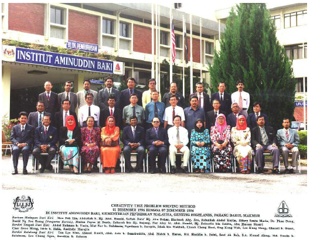
Lớp PPLSTVĐM dạy cho các quan chức Bộ giáo dục Malaysia
Trung tâm sáng tạo khoa học – kỹ thuật và hoạt động khơi dậy tiềm năng sáng tạo ở người học. Phan Dũng. Công tác khoa giáo, số 5, 1998 (tạp chí của Ban khoa giáo Trung ương Đảng).
… Tháng ba vừa qua (tháng 3 năm 1998 – người viết), TSK rất phấn khởi đón GS.VS. Đặng Hữu, Ủy viên trung ương Đảng, Trưởng ban khoa giáo Trung ương đến làm việc. Sau khi nghe TSK báo cáo các hoạt động và các kết quả đạt được, GS.VS. Đặng Hữu cho rằng, cần mở rộng việc dạy và học sáng tạo trong các trường học. Trước mắt, Ban khoa giáo Trung ương sẽ tổ chức một số seminar dành cho các đồng chí có trách nhiệm của một số bộ để nghe TSK trình bày tình hình hoạt động về lĩnh vực này ở Việt Nam và các kiến nghị cụ thể phát triển môn học này ở nước ta …
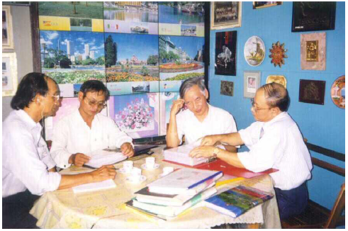
Người viết (thứ nhất từ phải sang) đang trao đổi với GS.VS. Đặng Hữu, trưởng ban khoa giáo Trung ương Đảng (thứ hai từ phải sang) tại Trung tâm sáng tạo khoa học – kỹ thuật (TSK).
Gặp gỡ cuối tuần: Chuẩn bị “tấm hộ chiếu vào thế kỷ 21” ở Việt Nam.
Khắc Thành thực hiện. Tuổi Trẻ Chủ Nhật. 29/8/1999.
“… Ông bắt đầu dạy PPLST ở VN năm 1977, một ngành học mới mẻ, hẳn phải trải qua nhiều thử thách để có thể đến với nhiều người. Hơn 20 năm qua ông đã gặp bao nhiêu “tình huống có vấn đề”? Cách ông giải quyết chúng như thế nào?
Chúng tôi gặp không ít các vấn đề. Chúng tôi tự xác định đây là công việc không ai bắt chúng tôi phải làm cả. Do vậy, “muốn ăn thì phải lăn vào bếp” và “mình làm mình chịu, kêu mà ai thương”. Chính PPLST đã giúp chúng tôi giải quyết được những vấn đề đó để từ “số âm” về tài chính, chúng tôi tiến tới trả được nợ ban đầu rồi mua sắm nhiều trang thiết bị phục vụ cho công tác giảng dạy, nghiên cứu, in khá đầy đủ giáo trình cho người học, đi dự một số hội nghị khoa học quốc tế và có “hàng” xuất khẩu. Cần phải nói thêm, có PPLST là tốt nhưng có cả may mắn nữa thì tốt hơn… Chúng tôi luôn nhớ đến những người đã giúp đỡ chúng tôi với lòng biết ơn.
22 năm kiên trì phổ biến PPLST, động lực nào đã giúp ông?
Các niềm vui đời thường và lương tâm mình.
Xin ông nói rõ hơn.
Các niềm vui đời thường từ gia đình, bạn bè, đồng nghiệp, công việc…, đặc biệt là từ các học trò đem lại. Đọc những dòng chữ, nhìn những nét mặt, ánh mắt khi họ kể về các ích lợi của PPLST đem lại cho chính họ, tôi như được nạp thêm năng lượng để đi tiếp.
Còn lương tâm, theo cách hiểu của tôi, đấy là những giá trị vĩnh cửu chứ không phải các giá trị mang tính cơ hội đọng lại thành máu thịt của mình sau khi được giáo dục (hiểu theo nghĩa rộng) từ ngoài vào. Hồi nhỏ, tôi được hưởng nền giáo dục thuận lợi. Ba má tôi là những tấm gương tận tụy và say mê với công việc. Tôi được học nhiều thầy ra thầy, được đọc những quyển truyện giúp hình thành những tình cảm tốt đẹp. Tôi trưởng thành trong kháng chiến chống Mỹ. Chính hoàn cảnh lúc ấy, chứ không chỉ những lời giáo huấn, làm tôi tự giác phải học bằng hai, học tất cả những gì thấy ích lợi đối với đất nước, dân tộc mình. Vì thế, học cùng lúc cả hai trường và đi phổ biến PPLST là điều tự nhiên, như tằm được ăn dâu thì phải nhả tơ, nhả thật nhiều tơ.
Trong gần 150 khóa PPLST, ông nhớ những khóa nào nhất? Vì sao?
Khóa một đánh dấu sự bắt đầu. Khóa 91 dạy cho các quan chức Bộ Giáo dục Malaysia, chứng minh khả năng xuất khẩu PPLST là hiện thực. Khóa 126 dạy cho các cán bộ lãnh đạo và chuyên viên chuyên trách Bộ Khoa học-công nghệ & môi trường tại Hà Nội. Đây là lần đầu tiên được dạy lớp dành riêng cho quan chức cấp bộ ở VN. Cũng như các quan chức Malaysia, họ đã khẳng định PPLST cần cho mọi người, đặc biệt cho các nhà quản lý. Một số người còn cho rằng PPLST giúp chúng ta tìm con đường tắt để rút ngắn khoảng cách tụt hậu. Khóa 137 dạy cho cán bộ và nhân viên Công ty Unilever Việt Nam. Cách tổ chức, điều kiện vật chất dành cho dạy và học làm tôi liên tưởng: giá như các doanh nghiệp VN cũng chú ý bồi dưỡng nguồn nhân lực của mình như thế.
Liên quan đến việc phát triển PPLST ở VN, điều gì làm ông lo lắng nhất?
Nhân giống. Hiện nay TSK dạy PPLST để người học sử dụng vào cuộc sống và công việc của họ chứ chưa đào tạo cử nhân, thạc sĩ, tiến sĩ chuyên ngành này như một số nước khác. Do vậy, nguy cơ “mất giống” luôn luôn hiện hữu.
Điều gì làm ông tiếc nhất?
Chúng ta đã và đang bỏ lỡ thời cơ. Nếu 22 năm qua chúng ta chuẩn bị được một đội ngũ, chí ít một tập thể tương đối lớn có khả năng dạy PPLST ở trình độ quốc tế (mà đầu tư bằng VNĐ lại rất rẻ), chúng ta hoàn toàn có thể xuất khẩu PPLST với lượng ngoại tệ thu được không phải là nhỏ. Ở Mỹ và Anh, một ngày học TRIZ trung bình một người phải trả 500 USD. Trừ một vài nước tiên tiến, thị trường PPLST trên thế giới, nhất là TRIZ đang là một “vùng trắng” chờ chiếm lĩnh.
Trong các nghị quyết của Đảng, phần nói về giáo dục đào tạo thường nhấn mạnh đến sáng tạo, ví dụ: “Áp dụng những phương pháp giáo dục hiện đại để bồi dưỡng cho học sinh năng lực tư duy sáng tạo, năng lực giải quyết vấn đề”. Xét về ý nghĩa này, TSK đang thực hiện nghị quyết Đảng…
Với tinh thần trách nhiệm, ngoài việc thường xuyên báo cáo cho cấp trên trực tiếp, tranh thủ những dịp có thể, chúng tôi đã cung cấp thông tin về PPLST cho nhiều đồng chí lãnh đạo ở những cấp cao hơn như thành phố, Bộ Giáo dục và đào tạo, Bộ Khoa học-công nghệ & môi trường, Ban khoa giáo trung ương Đảng, Chính phủ, Quốc hội và một số cơ quan, tổ chức như Trung tâm khoa học tự nhiên và công nghệ quốc gia, Phòng thương mại và công nghiệp VN… Tôi nghĩ trong quá trình phát triển của một đất nước, có những lúc sáng kiến đi từ trên xuống, và ngược lại có lúc đi từ dưới lên. Như người ta thường nói, trên dưới gặp nhau thì vấn đề sẽ được giải quyết nhanh hơn…”
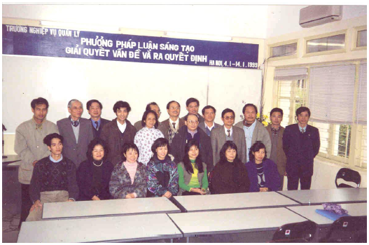
Lớp PPLSTVĐM dạy cho các quan chức và chuyên viên các Vụ thuộc Bộ khoa học, công nghệ và môi trường (nay là Bộ khoa học và công nghệ)
Đi Mỹ trao đổi về phương pháp luận sáng tạo. Khắc Thành thực hiện. Tuổi Trẻ Chủ Nhật. 20/5/2001.
“…Cảm tưởng chung của ông sau chuyến đi Mỹ trao đổi về PPLST?
Có thể nói ngắn gọn bằng mấy từ: vui, hài lòng, tiếc, lo và buồn.
Còn nếu không ngắn gọn?
Vui vì nhiều lẽ. Thứ nhất, được mời làm báo cáo viên chính (keynote speaker) của Hội nghị quốc tế TRIZCON 2001. Nhân đây cho phép tôi nói thêm về ông Don Clausing cùng được mời với tôi năm nay là giáo sư của Học viện công nghệ Massachusetts (MIT), một trường bậc nhất của Mỹ về khoa học – công nghệ, nơi có cả chục người nhận giải Nobel. Bản thân GS. Don Clausing đã từng hoạt động hơn 30 năm ở lĩnh vực khoa học, công nghệ cho nhiều công ty lớn của Mỹ như Westinghouse Electric Company, US Steel Corporation, Xerox Corporation và là tác giả của nhiều công trình nghiên cứu, sách giáo khoa đại học. Còn hai báo cáo viên chính của Hội nghị lần trước (TRIZCON 2000): tiến sĩ Paul MacCready được tạp chí Time bình chọn là “một trong 100 người quan trọng nhất của thế kỷ 20” và được Hội các kỹ sư cơ khí Mỹ bình chọn là “kỹ sư của thế kỷ”; tiến sĩ Dean Kamen được nhận danh hiệu _“kỹ sư của năm_” và nhận huy chương Hoover vì “những sáng chế thúc đẩy chăm sóc y tế toàn cầu”. Tôi vui vì được mời “ngồi chung chiếu” với những nhà khoa học, sáng chế đó.
Thứ hai, trong chuyến đi này tôi được trao đổi thật “đã” với các đồng nghiệp quốc tế về chuyên môn PPLST, điều tôi thường cảm thấy “cô đơn” khi ở trong nước.
Thứ ba, vui vi trước, trong và ngay sau Hội nghị có bốn nơi ở Mỹ xin phép cho đăng lại báo cáo của tôi trong các tạp chí của họ và giáo sư Toru Nakagawa thuộc Đại học Osaka Gakuin xin phép dịch báo cáo của tôi sang tiếng Nhật.
Thứ tư, vui vì được các đồng nghiệp, bạn bè và bà con đưa đi xem một số danh lam thắng cảnh, di tích lịch sử, văn hóa, kiến trúc, viện bảo tàng của Mỹ.
Tôi cũng hài lòng vì những nỗ lực “hàng ngày từ giờ thứ 9 trở đi đến giờ thứ 12, 14”, “mang tiền và dụng cụ từ nhà đến làm việc cơ quan”, cùng tập thể TSK hoạt động trong gần 25 năm qua để “đi tắt đón đầu” bằng các hoạt động tự trang trải, không thụ động chờ xin kinh phí nhà nước đã không uổng phí. Kết quả chúng tôi đạt được là những điều mà nhiều đồng nghiệp quốc tế mong muốn có: 8.000 người VN đã học và dùng TRIZ ở các mức độ khác nhau; giáo trình PPLST của chúng tôi thuộc loại đầy đủ và chất lượng nhất trên thế giới. Chưa kể về mặt khoa học, chúng tôi có nhiều công trình phát triển tiếp TRIZ được mời báo cáo hoặc đăng trong các tạp chí quốc tế chuyên về sáng tạo và đổi mới, chủ yếu tại châu Âu và Mỹ. Tính ra, TRIZ được đưa vào VN từ năm 1977, tức là trước Mỹ 14 năm, Pháp 19, Nhật 20, và Hàn Quốc 21 năm.
Tuy nhiên, tôi cũng rất tiếc vì thấy rõ một cơ hội lớn cho chúng ta để tiếp tục đi trước trong lĩnh vực khoa học quan trọng này đã và đang bị bỏ lỡ, nhất là qua thái độ dửng dưng của những người có trách nhiệm.
Từ đó tôi thấy lo và buồn. Lo vì giành vị trí đã khó, giữ được vị trí còn khó hơn nhiều. Kinh nghiệm cho biết các nước công nghiệp (kể cả cũ và mới) một khi thấy cần phát triển lĩnh vực nào, họ không hô hào chung chung mà đầu tư làm thật sự và các nguồn lực của họ thì giàu và mạnh hơn chúng ta rất nhiều. Đó cũng là cảm tưởng của tôi sau chuyến đi giảng ở Bộ giáo dục Malaysia về PPLST. “Bây giờ mình sang dạy họ PPLST, nhưng với đà này trong tương lai họ sẽ sang dạy lại mình hoặc mình phải sang học lại họ”.
Chắc TTCN sẽ hỏi vì sao tôi buồn. Không buồn sao được khi tình trạng suy nghĩ giải quyết vấn đề, ra quyết định và làm việc duy ý chí, không có phương pháp rất phổ biến, dẫn đến kết quả sai rồi lại sai tiếp, lặp đi lặp lại hết năm này qua năm khác và cứ phải trả giá dài dài. Buồn vì nhiều vấn đề không đáng xảy ra lại xảy ra, lẽ ra có thể giải quyết tốt hơn để đi nhanh hơn, lại tiếp tục mò mẫm thử và sai dù ai cũng nói đến đổi mới tư duy.
Trong khi đó có sẵn công cụ khoa học PPLST, giúp suy nghĩ giải quyết vấn đề và ra quyết định một cách khoa học, sáng tạo thì thờ ơ lạnh nhạt với nó”.
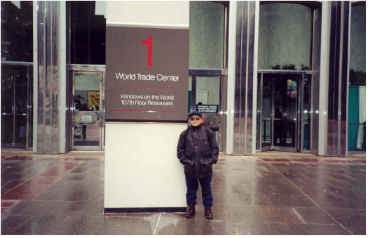
PPLST có thực sự mang lại ích lợi cho chính thầy không?
Phan Dũng. Báo tường TSK số 13, tháng 5/2002.
Tôi rất muốn biết những câu hỏi mà các học viên thường đặt cho các đồng nghiệp của tôi – những người dạy các môn liên quan đến sáng tạo và đổi mới (Creativity and Innovation) trên thế giới. Phần tôi, trong lúc giảng bài, trong giờ giải lao hoặc trong những dịp các học viên môn học Phương pháp luận sáng tạo đến thăm tôi, thường có những người đặt câu hỏi: “Khi thầy suy nghĩ giải quyết vấn đề và ra quyết định, thầy có thực sự áp dụng những gì thầy dạy cho các học viên của thầy không? Bản thân thầy đã giải quyết những vấn đề gì?”. Nếu thời gian không cho phép, ví dụ đang lúc giảng bài, tôi chỉ trả lời ngắn: “Có, tôi đã thật sự dùng những gì dạy các anh, chị để giải quyết nhiều vấn đề tôi gặp hoặc tôi đặt ra trong cuộc đời của mình”. Nếu có thời gian dài hơn, tôi trả lời theo kiểu so sánh trạng thái hiện nay với trạng thái quá khứ để người hỏi có thể tưởng tượng: đã phải giải quyết những vấn đề gì để có được những kết quả như ngày hôm nay. Nếu có thời gian dài hơn nữa, tôi kể chi tiết về quá trình giải quyết vài vấn đề của tôi để minh họa việc áp dụng phương pháp luận sáng tạo. Tùy theo người hỏi làm việc hoặc học tập trong lĩnh vực nào, tôi cố gắng chọn những vấn đề minh họa sao cho phù hợp với người hỏi. Những vấn đề đó có thể liên quan đến khoa học, công nghệ, khởi sự doanh nghiệp, lãnh đạo, quản lý, cư xử và giao tiếp vì bản thân tôi đã từng giải quyết chúng trong các hoạt động của mình.
Năm 2001 chúng tôi đã kỷ niệm 10 năm thành lập Trung tâm Sáng tạo Khoa học - Kỹ thuật (TSK) thuộc Trường đại học khoa học tự nhiên, Đại học quốc gia TPHCM. Năm nay, 2002 đánh dấu năm thứ 25 khóa “Phương pháp luận sáng tạo khoa học - kỹ thuật giải quyết vấn đề và ra quyết định” (gọi tắt là “Phương pháp luận sáng tạo” - PPLST) đầu tiên dạy ở Việt Nam. Nhân dịp này, bài viết ngắn này trình bày một số kết quả có được nhờ chúng tôi đã áp dụng chính PPLST để giải quyết các vấn đề liên quan đến việc đưa vào, phổ biến và phát triển PPLST ở Việt Nam.
Nhớ lại năm 1977, chiến tranh ở Việt Nam kết thúc hai năm trước đó với 3 triệu người Việt Nam chết. Trong số đó, hơn 300.000 người chết chưa tìm được hài cốt, nhiều triệu người bị thương tật do chiến tranh. Nhiều vùng nông thôn và rừng núi chịu hậu quả nặng nề của bom, đạn, mìn và chất độc màu da cam. Tuy vậy, Việt Nam vẫn chưa có hòa bình hoàn toàn, vì tiếp ngay đó là chiến tranh biên giới Tây Nam rồi đến chiến tranh biên giới phía Bắc. Việt Nam bị bao vây, cấm vận về kinh tế và là một trong những nước nghèo nhất thế giới. Với tư cách giảng viên đại học, lúc ấy, mỗi tháng tôi nhận lương chưa tới 10 USD và đã nhiều lần dẫn sinh viên về nông thôn tăng gia sản xuất để góp phần giải quyết vấn đề lương thực, thực phẩm. Tôi còn nhớ, kiếm được giấy bút để soạn giáo trình PPLST là cả vấn đề; điện thì lúc có, lúc không, nước nhiều khi thức đêm để hứng và… bụng thì lúc nào cũng thấy đói.
Nói cách khác, lúc đó cả đất nước nói chung và từng người Việt Nam nói riêng đứng trước rất nhiều vấn đề. Hoàn cảnh này càng thúc đẩy tôi hành động để biến ý định được hình thành từ khi học Thầy G.S.Altshuller - tác giả của Lý thuyết giải các bài toán sáng chế (TRIZ), năm 1971 tại Đại học sáng tạo sáng chế, Baku, Liên Xô trước đây thành hiện thực: phổ biến PPLST một cách rộng rãi ở Việt Nam. Nhờ được học PPLST và có được các ích lợi thiết thực do sử dụng PPLST, tôi cho rằng, người càng nghèo càng phải biết sử dụng các phương pháp và các kỹ năng của PPLST để có thể đưa ra lời giải, quyết định đúng cho vấn đề của mình ngay từ đầu. Bởi vì, tiếp tục trả giá cho phương pháp truyền thống thử và sai là điều vô cùng xa xỉ, không chấp nhận được.
Từ đó tôi đặt ra hàng loạt các vấn đề cần giải quyết. Trước hết là soạn chương trình thích nghi PPLST dùng để dạy và nội dung tóm tắt các bài giảng cho người học - những người chỉ cần có trình độ phổ thông trung học là đủ để tiếp thu môn học, không phân biệt tuổi, ngành nghề, chuyên môn, chức vụ, thành phần xã hội… Tôi dùng chữ “thích nghi” bởi vì tôi không thể sao chép nguyên xi những cái học được ở Liên Xô mà phải tính đến những điều kiện xã hội, kinh tế, khoa học, công nghệ và văn hóa của Việt Nam. Việc làm này xuất phát từ khái niệm đổi mới (Innovation) được phát biểu như sau: “Đổi mới là quá trình thực hiện tạo ra những cái mới sao cho chúng được các hệ liên quan tiếp nhận một cách đầy đủ, ổn định và bền vững để các hệ liên quan hoạt động tốt hơn trước”.
Tiếp theo là các vấn đề thuyết phục lãnh đạo để chương trình PPLST được phép dạy và làm sao để có người học. Mặc dù ở giai đoạn này, tôi chấp nhận không nhận trợ cấp giảng dạy ngoài giờ và người đi học không phải đóng học phí. Cơ chế kế hoạch hóa tập trung, quan liêu, bao cấp thời ấy thường không ủng hộ những cái khác với kế hoạch từ trên giao xuống. Thêm nữa, phần lớn mọi người, kể cả các cấp lãnh đạo mà tôi có dịp tiếp xúc đều không hiểu đúng đối tượng, mục đích, ý nghĩa và các ích lợi của môn học PPLST mà thường căn cứ vào tên gọi để giải thích nội dung môn học theo ý chủ quan của họ. Chẳng hạn họ cho rằng “phương pháp luận” là một phần của triết học; “sáng tạo” là công việc cao siêu của các nhà khoa học, sáng chế như Einstein và Edison, làm sao có thể dạy và học được; “giải quyết vấn đề và ra quyết định” là công việc của các nhà lãnh đạo, quản lý cấp cao còn những người khác là những người thừa hành. Từ đó, họ bày tỏ thái độ không tin tưởng, thậm chí phản đối một môn học theo họ trừu tượng, xa rời thực tế và không thiết thực trong khi có nhiều vấn đề cấp bách hơn cần giải quyết. Không chỉ nói sau lưng, có những đồng nghiệp dạy đại học nói thẳng vào mặt tôi, đại loại: “Anh có phải mới từ Sao Hỏa rớt xuống không?” hoặc “Thời buổi thiếu thốn như thế này chỉ có những thằng điên mới theo học anh”. Sau này, khi mọi cái ở đúng chỗ của nó, có những cựu học viên thú thực với tôi: “Thời học thầy, chúng em không dám kể cho ai cả vì sợ bị chế giễu, cười cợt. Người ta hỏi đi học gì thì trả lời tránh là học ngoại ngữ”. Tóm lại, đây là các vấn đề liên quan đến tính ì của tâm lý con người nói riêng và của hệ thống nói chung mà tôi gặp trên mỗi bước đường đi của cuộc đời mình.
Sau khi giải quyết xong vấn đề được phép dạy PPLST và tập hợp được người đi học, tôi dần chuyển sang giải quyết các vấn đề liên quan đến nghiên cứu hoàn thiện chương trình PPLST và cách truyền đạt. PPLST phải làm cho những người học đủ mọi trình độ từ mọi thành phần kinh tế, xã hội học dễ hiểu, áp dụng thuận tiện vào giải quyết các vấn đề của họ trong công việc và đời sống hàng ngày nhằm đem lại các lợi ích thiết thực cho chính họ. Chương trình PPLST có hạt nhân là TRIZ và một số các phương pháp của Phương Tây: Phương pháp đối tượng tiêu điểm, Phân tích hình thái, Danh sách các câu hỏi kiểm tra, Não công, Synectics. TRIZ, như tôi được học, có khởi đầu từ lĩnh vực sáng chế kỹ thuật và trước hết dành cho các nhà sáng chế kỹ thuật. Tuy thầy Altshuller không ít lần nhấn mạnh đến khả năng mở rộng TRIZ sang các lĩnh vực không kỹ thuật, trên thực tế, lúc ấy chưa có một công trình đáng kể nào được công bố theo hướng này. Điều đó làm tôi bắt tay vào giải quyết vấn đề mở rộng TRIZ và dạy TRIZ mở rộng cho đông đảo mọi người, sao cho ai cũng có thể học, vận dụng vào thực tế. Tiềm năng của TRIZ cho thấy những vấn đề kể trên có thể giải quyết được và tôi đã thu được một số kết quả rất khích lệ. Thêm nữa, những kết quả đạt được, theo tôi còn hé mở ra khả năng xây dựng Lý thuyết tổng quát giải các bài toán sáng tạo mà các phương pháp cụ thể giải các bài toán sáng tạo hiện có chỉ là những trường hợp riêng của lý thuyết sẽ được thành lập. Đây chính là hướng nghiên cứu lâu dài của chúng tôi.
Năm 1986 Việt Nam bắt đầu quá trình đổi mới, chuyển sang kinh tế thị trường có sự quản lý của nhà nước, thực hiện chính sách mở cửa hội nhập với cộng đồng quốc tế. Năm 1991 tôi quyết định phải thành lập một trung tâm chuyên ngành với nhiệm vụ chính: giảng dạy và nghiên cứu PPLST, hoạt động theo cơ chế thị trường bằng cách tự kiếm tiền thông qua thu phí của người học, tự trang trải để phổ biến và phát triển PPLST ở Việt Nam. Tôi bắt buộc phải làm như vậy, vì trước đó tuy tôi đã gõ cửa nhiều cơ quan nhà nước, tổ chức… kể cả một số tổ chức quốc tế về văn hóa và giáo dục nhưng đều nhận được sự từ chối tài trợ. Ngoài tờ giấy quyết định của Đại học tổng hợp TPHCM cho phép thành lập, Trung tâm sáng tạo KHKT lúc ấy không có gì cả: không diện tích, không phương tiện làm việc tối thiểu, không có vốn ban đầu và nhiều thứ không khác nữa. Về nhân sự TSK có hai người: tôi và thầy Trần Thế Hưởng, người đã học PPLST vào năm 1986. Lương tôi lúc đó khoảng 20 USD một tháng và chưa có kinh nghiệm gì về thị trường.
Tuy vậy, tôi lạc quan và tưởng tượng một cách khá rõ ràng PPLST sẽ giúp biến không thành có, có ít thành có nhiều hơn như thế nào. Giải quyết được vấn đề thị trường tiếp nhận sản phẩm PPLST của chúng tôi và số người đi học càng ngày càng đông chính là một phát súng bắn được vài con thỏ: 1) thực hiện được cam kết của chính mình về việc đưa vào, phổ biến, phát triển PPLST ở Việt Nam và có những đóng góp vào sự phát triển lĩnh vực sáng tạo và đổi mới cùng với các đồng nghiệp trên thế giới. 2) tự tạo ra kinh phí để tự phát triển, không bị động chờ đợi nguồn kinh phí của nhà nước mặc dù Trung tâm là đơn vị thuộc nhà nước; 3) có những niềm vui đời thường do được làm công việc yêu thích; 4) có thêm thu nhập chính đáng ngoài lương nhà nước trả để cải thiện đời sống các gia đình của các thành viên Trung tâm.
Thực tế cho thấy các mục đích đề ra đều đã đạt được. Đến tháng 3 năm 2002 chúng tôi đã làm việc với hơn 8.000 người theo học 192 khóa cơ bản, 13 khóa trung cấp (60 tiết học một khóa). Ngoài ra, còn có hàng ngàn người khác tham dự các buổi nói chuyện, seminar, workshop hoặc khóa ngắn hạn theo yêu cầu với thời lượng từ 4 đến 20 tiết. Trung tâm có website bằng tiếng Việt, tiếng Anh, Bản tin (newsletter): “Báo tường TSK” ra hàng quý. Cộng đồng các cựu học viên PPLST mỗi năm bầu một Ban đại diện giữ vai trò liên kết các cựu học viên. Ngày chủ nhật đầu tiên sau ngày Nhà giáo Việt Nam 20/11 được chọn là Ngày họp mặt truyền thống của thầy và trò môn học PPLST và được tổ chức với nhiều hoạt động vui vẻ và bổ ích tại khách sạn Bến Nghé (giám đốc khách sạn cũng là cựu học viên). Tham gia những buổi họp mặt đó, giao lưu với các cựu học viên, lắng nghe họ hát bài “Sáng tạo ca” nhìn những ánh mắt hào hứng của họ khi họ kể về việc PPLST đã đem lại những ích lợi gì cho họ, tôi thấy vô cùng hạnh phúc. Hạnh phúc vì những nỗ lực của các thầy và trò đã đem lại thành quả và tôi nhận được sự động viên - nguồn năng lượng rất lớn từ phía các học viên để mình tự tin hơn giải quyết tiếp những vấn đề ở phía trước.
Có ai đó nói: “Dạy là học lần thứ hai”. Tôi muốn bổ sung: “Áp dụng những gì học được là học nhiều lần và hơn thế nữa”. Thứ nhất, những kinh nghiệm thực tế thường thiết thực hơn những kinh nghiệm lý thuyết. Thứ hai, nhờ trải qua áp dụng bạn mới tiêu hóa thực sự những gì bạn muốn dạy cho người khác. Thứ ba, các bài giảng của bạn lúc đó sẽ có hồn hơn vì bạn trình bày chúng bằng chính những ngôn từ và xúc cảm của bạn, giúp thúc đẩy hành động ở những người học bạn.
Tôi có may mắn học PPLST khá sớm, khi còn là sinh viên (thật ra nên được học sớm hơn) và dùng chúng suốt từ đó đến nay. Tôi tin rằng, PPLST giúp mọi người đưa ra lời giải, quyết định và thực hiện chúng để có được sự phát triển bền vững, hiểu theo nghĩa, tất cả các bên đều thắng và không làm nảy sinh những vấn đề không đáng nảy sinh. Do vậy, mỗi người và toàn nhân loại sẽ hạnh phúc hơn.
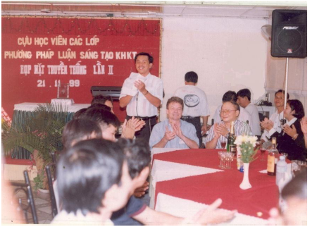
Gặp gỡ cuối tuần: “Đừng để lỡ tàu thêm lần nữa”…
Nhật Lệ thực hiện. Lao Động. 8/9/2002.
“Trước ông, đã có nhiều người VN nhận được bằng tiến sỹ khoa học trong lĩnh vực vật lý lý thuyết, riêng ông là người đầu tiên nhận được học vị này của Liên Xô (cũ) trong lĩnh vực vật lý thực nghiệm khi chưa tới 40 tuổi. “Hiếm” như thế, tại sao ông lại bỏ nghề thứ nhất để đi theo phương pháp luận sáng tạo (PPLST)?
Thế hệ chúng tôi không có quyền chọn ngành học. Tôi học ngành vật lý chất rắn thực nghiệm là do phân công của Nhà nước theo kế hoạch phát triển của Nhà nước đề ra. Điều này ngụ ý rằng, học xong tôi sẽ trở về làm việc cho Nhà nước và Nhà nước tạo điều kiện để tôi có thể làm việc theo chuyên môn được phân công. Rất tiếc, thực tế không diễn ra theo kịch bản đó. Những máy móc, thiết bị thí nghiệm mà tôi có dịp được sử dụng ở Liên Xô quy ra tiền cỡ vài chục triệu USD. Trong khi đó, là tiến sỹ khoa học ở VN, tôi không có một bộ bàn ghế cho riêng mình làm chỗ ngồi làm việc tại tổ bộ môn chứ chưa nói gì đến các công cụ lao động tối thiểu khác. Câu hỏi “làm gì?” luôn bám riết tôi. Cuối cùng tôi quyết định chọn PPLST vì mấy lý do sau: Thứ nhất, theo quan niệm hiện đại, PPLST vừa thuộc bộ môn khoa học cơ bản (nghiên cứu các quy luật tư duy sáng tạo), vừa rất thiết thực cho từng người (vì ai cũng phải suy nghĩ). Thứ hai, để phát triển nó không cần mất nhiều tiền như vật lý thực nghiệm. Do vậy, ngay trong trường hợp xấu nhất không nhận được tiền từ ngân sách nhà nước thì mình vẫn có thể tự kiếm tiền và tự đầu tư phát triển được. Thứ ba, đây cũng là nguồn thu nhập thêm chính đáng ngoài lương nhà nước mà tháng nào cũng thiếu trước, hụt sau.
Ở trên ông có nói PPLST vừa cơ bản vừa thiết thực với từng người. Xin ông nói rõ thêm!
Ở các nước phát triển, để đối phó với các thách thức như tính cạnh tranh tăng, làm sao để đầu ra ngày càng nhiều trong khi đầu vào ngày càng ít… đã xuất hiện nhu cầu xã hội đòi hỏi giải quyết các vấn đề nhanh hơn và hiệu quả hơn. Chính nhu cầu xã hội đã thúc đẩy quá trình khoa học hóa lĩnh vực tư duy sáng tạo. PPLST giúp nâng cao năng suất và hiệu quả tư duy sáng tạo, mà thực chất là quá trình suy nghĩ giải quyết vấn đề và ra quyết định, đầu tiên của các doanh nghiệp rồi các cơ quan chính phủ, thậm chí, đến từng người trong xã hội.
Ông nhận xét gì về việc dạy, học và sử dụng phương pháp luận ở nước ta?
Người nước ta có câu: “Cho vàng không bằng chỉ đàng làm ăn”. Đàng làm ăn chính là phương pháp làm ăn. Gần đây, các nhà lãnh đạo, quản lý giáo dục có kêu gọi đổi mới phương pháp dạy và học. Tôi cho là quá muộn nhưng đành an ủi: Thà muộn còn hơn không. Nhìn rộng hơn, tình trạng làm việc thiếu phương pháp ở nước ta khá phổ biến, do vậy các giải pháp, các quyết định đưa ra nhiều khi mang tính mò mẫm, cứ phải sửa đi sửa lại, trả giá dài dài. Tệ hơn, có những người đã học phương pháp trong nhà trường nhưng khi ra làm việc lại “cố ý làm trái”. Vụ hầm chui Văn Thánh 2 bị lún, nứt một cách tệ hại chỉ là một trong nhiều ví dụ về việc vi phạm phương pháp đã có trong quá trình thăm dò, khảo sát, thiết kế và thi công. Trong khi đó, những người chịu trách nhiệm về vụ việc nói trên lại “thanh minh một cách dễ thương” là họ sốt ruột muốn thông xe nhanh để phục vụ nhân dân. Tôi rất lo vì loại người “ăn như rồng cuốn, nói như rồng leo, làm như mèo mửa” hình như ngày càng nhiều.
Ông dạy về các phương pháp suy nghĩ sáng tạo, giải quyết vấn đề. Vậy xin ông cho biết các phương pháp mang lại ích lợi gì cho chính ông?
Đã hơn 30 năm nay tôi áp dụng PPLST vào giải quyết các vấn đề mình gặp trong công việc, cuộc sống. Các ích lợi phải nói là rất nhiều, đến nỗi tôi phải chia cuộc đời mình thành hai thời kỳ: trước và sau khi học PPLST. Ở thời kỳ sau, năng suất và hiệu quả công việc tăng lên, sai lầm và trả giá giảm đi. Có hai việc làm tôi tự hào và vui nhiều, đấy là áp dụng PPLST để làm luận án tiến sĩ khoa học và phổ biến PPLST ở VN. Ở ĐH tổng hợp Leningrad, nơi tôi làm việc trong lĩnh vực vật lý chất rắn thực nghiệm, thời gian trung bình từ bậc 1 lên bậc 2 là 15 năm. Nhờ PPLST tôi đã thực hiện điều ấy trong vòng 2 năm(1)…”
- Ở Liên Xô có hai bậc tiến sỹ. Bậc một, tiếng Nga viết là Кандидат Наук (đọc là Kanđiđat Nauk). Bậc hai - Доктор Наук (đọc là Đoktor Nauk). Thay vì nhận các bằng tiến sỹ viết bằng tiếng Nga, bạn có thể đề nghị Ủy ban văn bằng tối cao (Supreme Attestation Commission) cấp các bằng tiến sỹ viết bằng tiếng Anh. Ủy ban văn bằng tối cao trực thuộc Chủ tịch Hội đồng bộ trưởng chứ không thuộc bộ nào mới có quyền cấp các bằng tiến sỹ. Bộ đại học và trung học chuyên nghiệp Liên Xô chỉ cấp các bằng từ tốt nghiệp đại học trở xuống. Lúc đó, tiến sỹ bậc một được viết là Doctor of Philosophy (Ph.D) và bậc hai – Doctor of Science (Dr. Sc.). Hiện nay, ở nước ta dịch là tiến sỹ và tiến sỹ khoa học.
Theo quyển sách “Cán bộ khoa học” của các tác giả, B.Đ. Lebin, V.A. Rassuđovski, G.A. Tsưpkin, nhà xuất bản “Khoa học”, 1982 (Научный Работник, Б.Д. Лебин, В.А. Рассудовский, Г.А. Цыпкин, “Наука”, 1982):
Bằng tiến sỹ cấp cho người đã tốt nghiệp đại học (để có bằng đại học, trừ một số ngành thuộc đại học sư phạm học 4 năm, các đại học khác học từ 5 năm trở lên), đã hoàn thành chương trình đào tạo tối thiểu dành cho nghiên cứu sinh và bảo vệ thành công luận án tiến sỹ một cách công khai. Luận án tiến sỹ phải là công trình nghiên cứu khoa học hoàn chỉnh do nghiên cứu sinh tự thực hiện hoặc dưới sự hướng dẫn của tiến sỹ khoa học (hoặc, trong trường hợp ngoại lệ, nếu dưới sự hướng dẫn của tiến sỹ thì tiến sỹ đó phải có các thành tích khoa học đáng kể) chứa lời giải mới của một vấn đề khoa học cấp bách, có ý nghĩa quan trọng đối với lĩnh vực chuyên môn tương ứng. Các bài báo, báo cáo khoa học phản ánh nội dung luận án tiến sỹ phải được đăng trước ngày bảo vệ ít nhất 4 tháng trong các tạp chí khoa học chuyên ngành, các kỷ yếu hội nghị khoa học…
Bằng tiến sỹ khoa học cấp cho những người đã có bằng tiến sỹ và bảo vệ thành công luận án tiến sỹ khoa học một cách công khai. Luận án tiến sỹ khoa học phải là công trình nghiên cứu khoa học độc lập (ở bậc này hoàn toàn không có chương trình đào tạo, không có người hướng dẫn), được đánh giá là mở ra hướng nghiên cứu mới có triển vọng, hoặc hoàn thành sự khái quát hóa có tính lý thuyết cao và giải quyết được vấn đề khoa học lớn có ý nghĩa quan trọng về kinh tế quốc dân, chính trị và văn hóa – xã hội. Các bài báo, báo cáo khoa học phản ánh nội dung luận án tiến sỹ khoa học phải được đăng trước ngày bảo vệ ít nhất 6 tháng trong các tạp chí khoa học chuyên ngành, các kỷ yếu hội nghị khoa học…
Việc lập ra hai bậc tiến sỹ ở Liên Xô có lý do nhằm bảo đảm chất lượng đào tạo theo nguyên tắc: bậc cao mới được đào tạo bậc thấp hơn, tránh đào tạo cùng một bậc kiểu như cử nhân đào tạo cử nhân mà chúng ta thường gọi một cách không thiện cảm là “cơm chấm cơm”. Như vậy, phải là tiến sỹ khoa học mới được đào tạo tiến sỹ, còn tiến sỹ đào tạo tiến sỹ là ngoại lệ, chứ không phải quy tắc.
Có câu hỏi đặt ra: Ai đào tạo tiến sỹ khoa học? Như trên đã trình bày, tiến sỹ khoa học là kết quả của quá trình tự đào tạo. Điều này có nghĩa, Liên Xô chỉ đào tạo tiến sỹ (bậc 1) là xong. Sau đó, trong quá trình làm việc tiếp theo, ai trong số các tiến sỹ đã được đào tạo đạt thêm được những kết quả nghiên cứu khoa học mới, đáp ứng các tiêu chuẩn của tiến sỹ khoa học. Người đó tập hợp chúng lại, viết dưới dạng luận văn và xin bảo vệ ở Hội đồng khoa học nhà nước bảo vệ luận văn tiến sỹ khoa học. Nếu bảo vệ thành công và được Ủy ban văn bằng tối cao công nhận thì người đó được Ủy ban cấp bằng tiến sỹ khoa học (bậc 2).
Theo quyển sách “Quang học chất rắn và Vật lý siêu âm” do B.V. Novikov chủ biên, nhà xuất bản Đại học tổng hợp Saint Petersburg (trước đây là Leningrad), 1999 (Оптика твѐрдого тела и Физика ультразвука, под редакцией Б.В. Новикова, Издательство С-Петербургского Университета, 1999), xuất bản nhân dịp kỷ niệm 275 năm thành lập Đại học tổng hợp Saint Petersburg, người viết được biết: tại Bộ môn Vật lý chất rắn nơi người viết đã từng làm việc, đối với những người bảo vệ thành công luận án tiến sỹ khoa học, thời gian làm việc trung bình của họ từ tiến sỹ đến tiến sỹ khoa học khoảng 15 đến 20 năm.
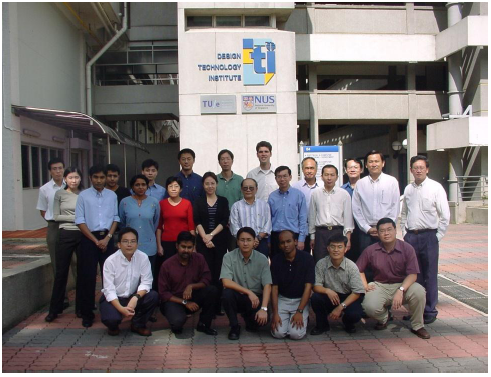
Lớp PPLSTVĐM dạy cho các cán bộ quản lý, giảng dạy và nghiên cứu của Học viện công nghệ thiết kế (Design Technology Institute) tại Singapore
Môn tư duy sáng tạo sẽ được dạy trong các trường học.
Mai Lan thực hiện. Sài Gòn Giải Phóng. 18/3/2004.
“Phương pháp luận sáng tạo (PPLST) mà ông đang nghiên cứu triển khai, có thể được hiểu như thế nào?
PPLST là hệ thống các phương pháp giúp nâng cao năng suất và hiệu quả quá trình suy nghĩ sáng tạo giải quyết vấn đề, ra quyết định trong công việc và cuộc sống của mỗi người. Những phương pháp này đã và đang dạy và học như các môn học truyền thống ở nhiều nước. Họ đào tạo cả cử nhân (BS, BA), thạc sỹ (MS, MA, MBA) và tiến sỹ (PhD) về lĩnh vực này. PPLST giúp chuẩn bị nguồn nhân lực sáng tạo cho kinh tế và xã hội tri thức.
Chúng tôi được biết trung tâm của ông cũng đã mở nhiều lớp PPLST?
Từ 1977 đến nay, chúng tôi đã dạy hơn 230 khóa PPSLT theo chương trình 60 tiết học và thực hiện hàng trăm buổi nói chuyện chuyên đề phổ biến PPSLT cho khoảng 15.000 người từ Hà Nội đến Cà Mau. Ngoài ra, còn có một số khóa dạy ở Malaysia, Singapore theo lời mời.
Hình như ông cũng đã gõ cửa khá nhiều quan chức giáo dục với mong muốn được tạo điều kiện phát triển rộng môn học mới mẻ này. Và sau gần 30 năm kiên trì, “may mắn” đã mỉm cười với ông!?
Tôi hy vọng rằng, PPLST đã kết thúc giai đoạn phổ biến một cách tự phát, chuyển sang giai đoạn được Bộ nhìn nhận và bắt đầu hành động.
Sự nhìn nhận đó đánh dấu bằng việc thành lập Hội đồng khoa học và công nghệ của Bộ để xem xét PPLST. Thành phần của Hội đồng như thế nào?
Bộ trưởng đã quyết định thành lập Hội đồng khoa học và công nghệ cấp Bộ tư vấn về PPLST do GS-TSKH-VS Phạm Minh Hạc làm chủ tịch và 8 ủy viên là các GS, PGS, TS của Viện chiến lược và chương trình giáo dục, một số trường đại học và Vụ chức năng của Bộ(2). Cuộc họp của Hội đồng nói trên cùng một số khách mời đã được tiến hành ngày 8-1-2004.
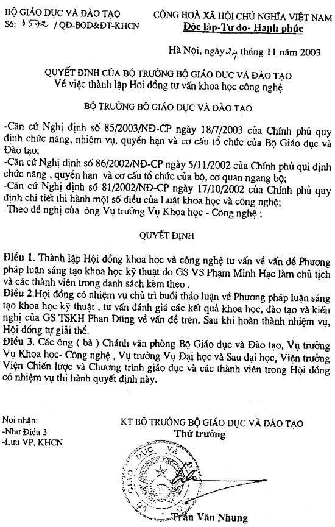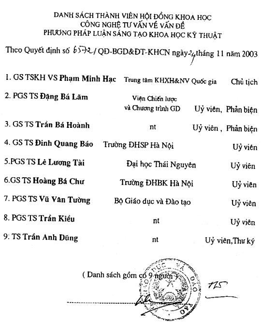
Và các kết luận cuối cùng của Hội đồng…
Sau khi tôi trình bày báo cáo và phần thảo luận, tất cả các thành viên Hội đồng và đại biểu tham dự cùng nhất trí đề nghị sau: “Cần mở rộng phạm vi phổ biến, tạo điều kiện biên soạn tài liệu, sách chuyên đề, có thể phổ biến PPLST theo phương thức giáo dục từ xa. Xem xét áp dụng đưa vào đào tạo sau đại học, có thể mở mã ngành và tổ chức viết tài liệu, đào tạo giảng viên…”(3)
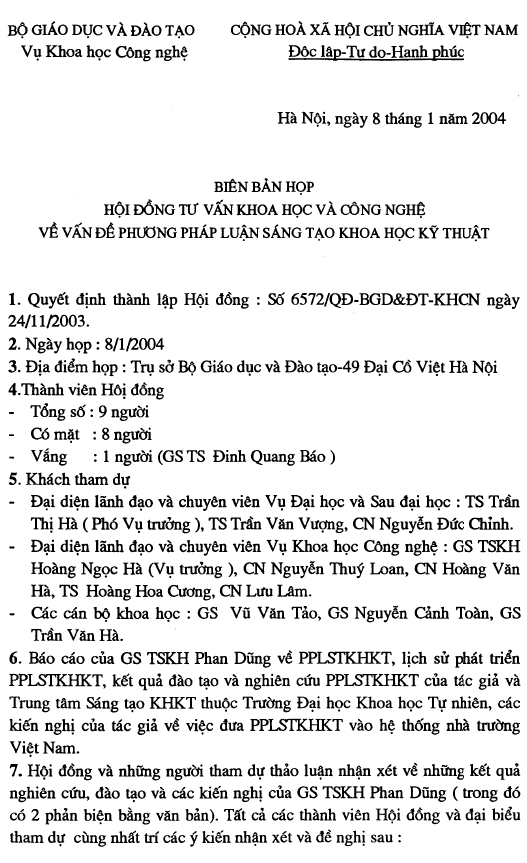 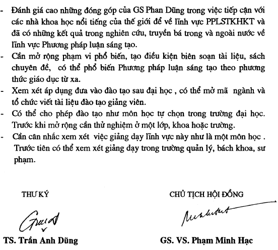
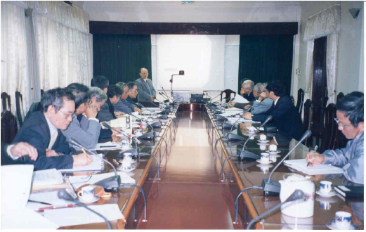
Báo cáo về PPLSTVĐM tại Hội đồng tư vấn của Bộ giáo dục – đào tạo, ngày 8/1/2004
Ngoài ra, ngày 25-2-2004 Bộ có công văn số 1276/KHCN báo cho chúng tôi biết: Bộ trưởng Bộ giáo dục và đào tạo đã giao cho các đơn vị chức năng nghiên cứu và đề xuất việc áp dụng PPLST trong điều kiện thích hợp(4)…
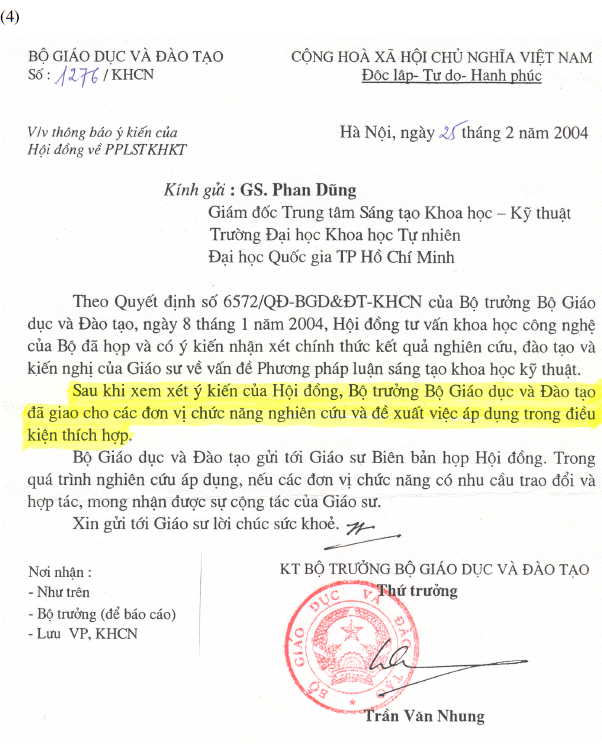
Phải chăng SV-HS-GV chỉ cần học PPLST là có thể thay đổi cả hệ thống tư duy trong GD? Thay đổi cả một phương pháp tư duy thiếu năng động, sáng tạo của ngành GD chỉ đơn giản vậy thôi sao? Ông có tin chắc rằng những người theo đuổi môn học của ông xong, họ có thể có ngay một tư duy sáng tạo ở trên mọi lĩnh vực.
Tôi chưa bao giờ nói rằng “chỉ cần học PPLST là có thể thay đổi cả hệ thống tư duy trong GD”. Có chăng là “góp phần thay đổi”. Hệ thống giáo dục và đào tạo gồm nhiều yếu tố tạo thành. Hệ thống đó còn thiếu yếu tố “giáo dục tư duy sáng tạo”. Trong khi đó, nghị quyết Hội nghị trung ương 6, khóa IX, đòi hỏi phải “tăng cường giáo dục tư duy sáng tạo”. PPLST có khả năng đóng góp trực tiếp vào phần đó của nghị quyết. PPLST cũng tương tự như các môn học truyền thống khác có những đòi hỏi không chỉ đối với người dạy mà còn cả người học, hiểu theo nghĩa, người học cần tiêu hóa, thực hành, áp dụng…
Cả Trung tâm của ông chỉ có ông và vài ba giảng viên trẻ đảm nhận việc giảng dạy. Nay được triển khai rộng rãi, lấy đâu ra lực lượng. Còn đào tạo giảng viên thì cũng mất vài năm. Mà đây lại là người thầy đặc biệt: dạy phương pháp tư duy, liệu rằng, vài năm đào tạo họ có đủ sức truyền đạt?
Tôi rất mừng là Bộ trưởng Bộ GD-ĐT đã chính thức giao nhiệm vụ cho các đơn vị chức năng về vấn đề này và do vậy, chúng tôi không còn đơn độc nữa. Đây là thuận lợi vô cùng lớn. Chúng tôi nguyện đem tất cả kiến thức, kinh nghiệm và thời gian còn lại để tiếp tục triển khai công việc này dưới sự điều khiển thống nhất của một nhạc trưởng(5)”.
- Sau khi nhận được công văn trên đây, người viết đã gọi điện thoại ra Hà Nội để hỏi “các đơn vị chức năng” được Bộ trưởng Bộ giáo dục và đào tạo giao nhiệm vụ là những đơn vị nào để chuẩn bị cộng tác với các đơn vị đó. Tiến sỹ Hoàng Hoa Cương, chuyên viên Vụ khoa học-công nghệ trả lời rằng không được phép cho người viết biết, vì đấy là bí mật nội bộ của Bộ. Do vậy, cho đến nay, người viết vẫn không biết “các đơn vị chức năng” là những đơn vị nào cùng “nhu cầu trao đổi và hợp tác” của họ.